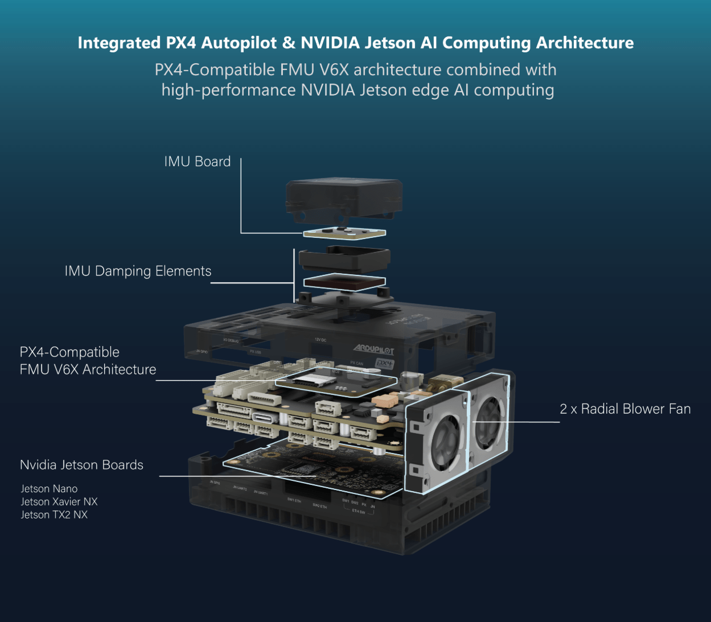

Specification
Jetson & System Support
| Feature | Description |
|---|---|
| Supported Jetson Modules | Jetson Nano, Xavier NX, AGX Xavier, Orin |
| SoM Connector | 260-Pin DDR4 SODIMM |
| Power Regulation | Dedicated 5.1 V – 5 A rail |
| Cooling | Active & passive advanced rail cooling |
| Camera Interface | 2 × 15-Pin, 1 mm pitch CSI |
| USB | USB 3.0 Type-C (2 A), USB 2.0 Mini-B |
| Debug | Debug UART, Force Recovery & Reset |
| Ethernet | 2 × 4-Pin, 100 Mbps |
| GPIO | 8-Pin |
| I2C | I2C0 |
| I2C1 | |
| UART | UART0 1 |
| UART1 | |
| DEBUG UART | UART2 |
| SPI | External -> CS0 |
| CAN -> CS1 | |
| BMI270 -> GPIO10 | |
| ETH Switch (KSZ8795) -> GPIO11 | |
| LED | Blue (Status / Power) |
Pixhawk & System Support
| Feature | Description |
|---|---|
| Supported Firmware | ArduPilot, PX4 |
| FMU Processor | STM32H753IIK6TR (32-bit Arm® Cortex®-M7, 480MHz, 2MB flash memory, 1MB RAM) |
| IO Processor | STM32F103 (32 Bit Arm® Cortex®-M3, 72MHz, 64KB SRAM) |
| Power Regulation | Dedicated 5.0 V – 3 A rail |
| Power Distribution | Onboard regulated |
| IO Status LEDs | 3x LEDs (Blue, Amber, Green) |
| Ethernet | Embedded 100 Mbps |
| Port Compatibility | Pixhawk & Jetson standards |
| Main Connectors | 100-Pin & 50-Pin Hirose DF40 |
| TELEM | TELEM1 (UART7) |
| TELEM2 (UART5) | |
| TELEM3 (USART2) 1 | |
| GPS | Full 10-pin JST-GH (UART1, I2C1, 5V Out) |
| Basic 6-pin JST-GH (UART8, I2C2, 5V Out) | |
| CAN | 1 |
| I2C | I2C3 |
| UART | UART4 |
| FMU USB | USB Type-C |
| RC / SBUS | PPM, S.BUS (5-Pin JST-GH) |
| PWM Outputs | 8 Channels FMU + 8 Channels IO (10-Pin JST-GH) |
| FMU/IO Debug Interface | SWD (10-Pin JST-SH) |
| Jetson Link | UART or Ethernet |
| FMU Onboard Sensor (Lectron V6X) | IMU: ICM-42670-P (SPI), Barometer: BMP390 (I2C), FRAM: FM25V02A, EEPROM: AT24C02D |
| Sensor Board (Lectron IMU-01) | IMU1: BMI270 (SPI), IMU2: ICM-42670-P (SPI), Barometer:BMP390 (I2C), Magnetometer: BMM350 (I2C), EEPROM: 24LC64T |
Power Architecture
| Feature | Description |
|---|---|
| Power-In | XT30 with reverse protection |
| Input Voltage | 12V – 25V (3S-6S LiPo) |
| Power Monitor | Internal Voltage & external I2C Current Monitor |
| 5.0 V Rail | 5.0 V – 3 A (Pixhawk & outputs) |
| 5.1 V Rail | 5.1 V – 5 A (Jetson & peripherals) |
| 12 V Rail | 12 V – 2 A (sensors/actuators) |
| Protection | Over-current & short-circuit sensing |
| Battery Monitoring | Input voltage sensing |
Ethernet Switch
| Feature | Description |
|---|---|
| IC | KSZ8795 5-Port 10/100 Managed Switch |
| Port Speed | 100 Mbps per port |
| External Ports | 2 × 4-Pin PHY (Ethernet 1 & Ethernet 2) |
| Internal Ports | 1 × Jetson PHY, 1 × FMU PHY |
| Configuration | SPI (Jetson SPI0-CS1) |
| Status LEDs | 4 × Blue — link / activity per port |
Thermal Management
| Feature | Description |
|---|---|
| Fans | 2 × 5 VDC, 0.75 W Intake Blower |
| Fan Control | Jetson fan framework |
| Airflow | Forced convection over heat-sink |
